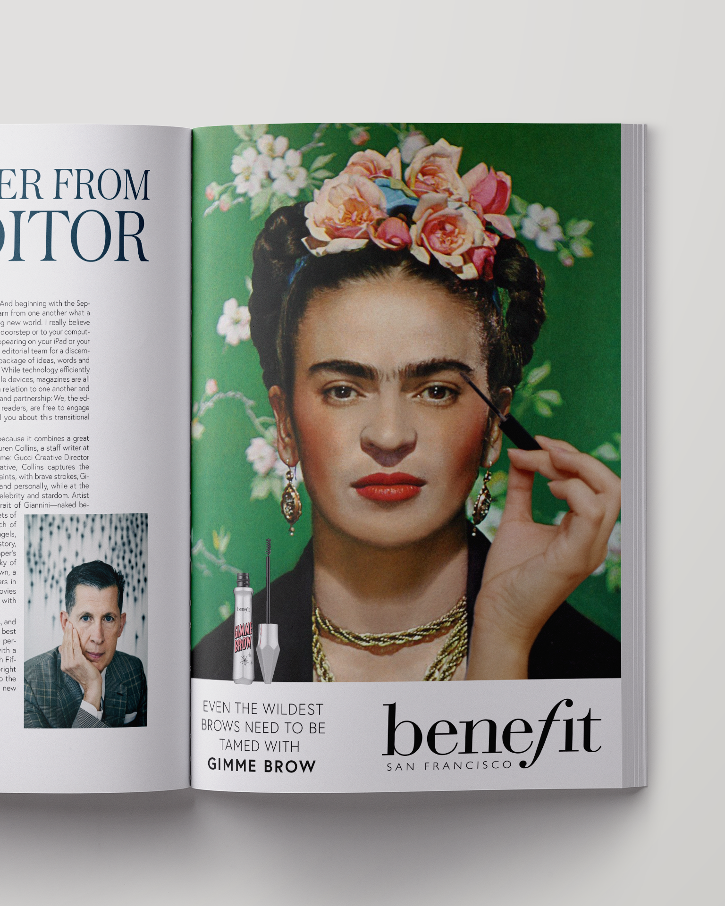
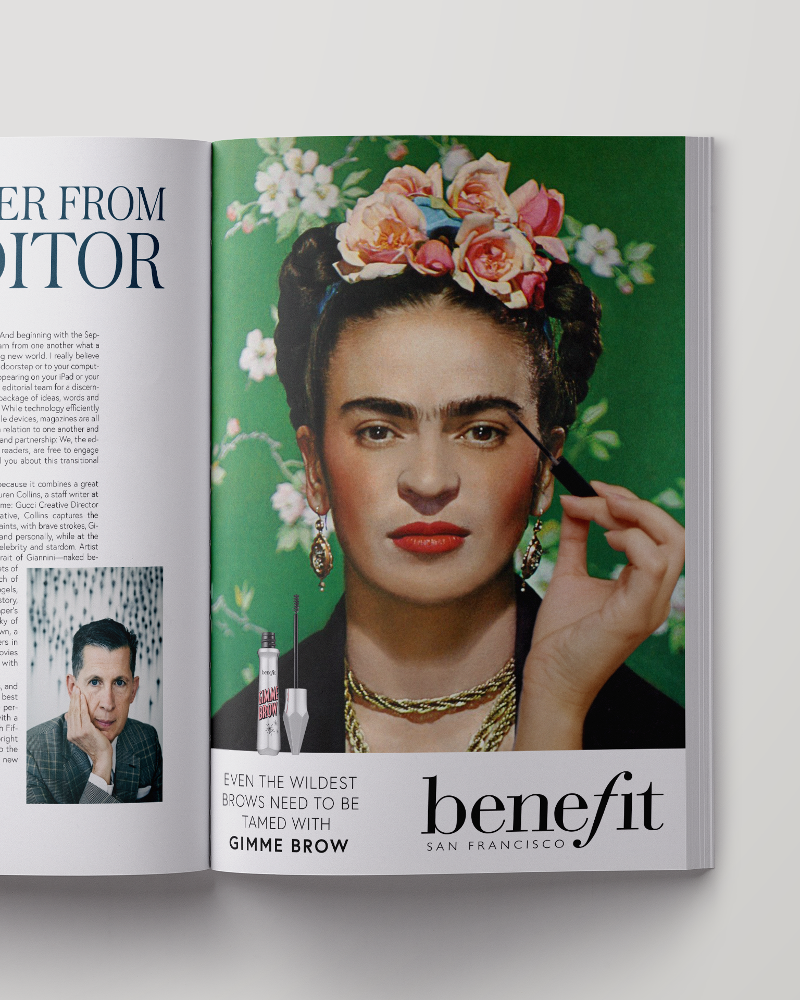

benefit cosmetics
These two conceptual ads were created by juxtaposing hands onto a historical work of art or image in order to create the appearance that the subjects are applying products to their faces. I chose images that related to certain products – Frida Kahlo's notoriously large eyebrows and Venus as the Roman goddess of beauty. The image used for the Venus ad is from Botticelli's Birth of Venus while the image of Frida Kahlo was photographed by Nickolas Murray in 1939.
![[Hidden]](img/Benefit-Ad-Subway.png)
![[Venus Ad]](img/Venus-Ad.png)
![[Frida Ad]](img/Frida-Ad.png) 

![[Venus Bus Ad]](img/Bus-venus-Ad.png)